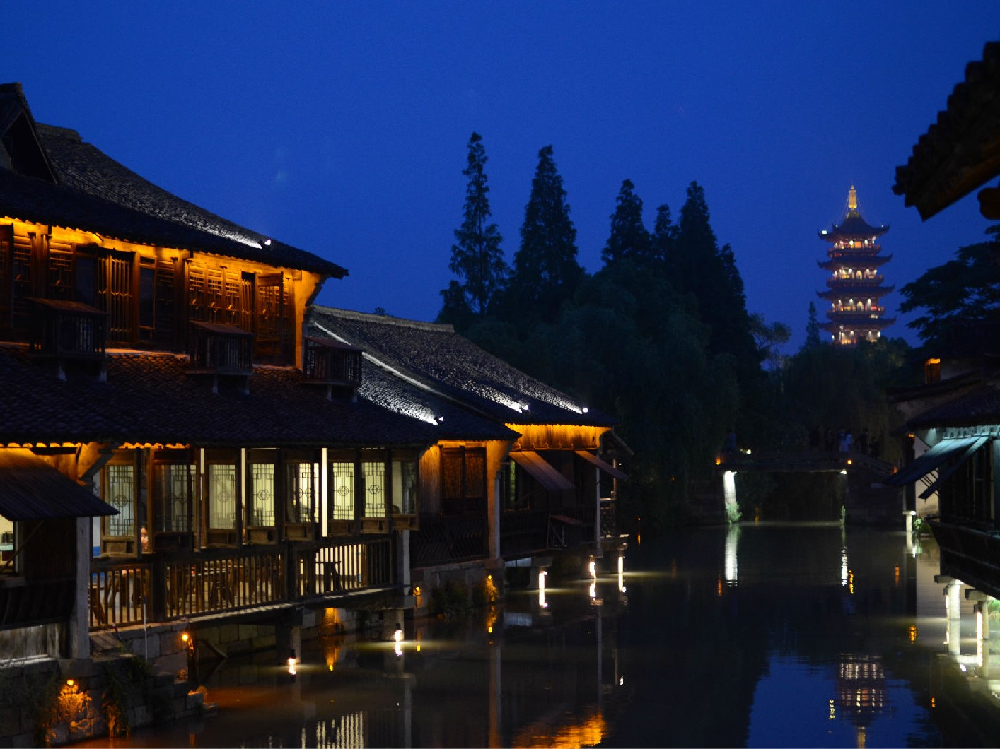

乌镇位于浙江省桐乡市北端，距桐乡市区13公里，与周庄、同里、甪直、西塘、南浔并称为江南六大古镇，素有“鱼米之乡，丝绸之府”美称。 乌镇是国家5A级景区，全国二十个黄金周预报景点之一。曾名乌墩和青墩，具有六千余年悠久历史。1991年被评为浙江省历史文化名城，1999年开始古镇保护和旅游开发工程。 作为典型江南水乡，乌镇完整地保存着原有晚清和民国时期水乡古镇的风貌和格局。以河成街，街桥相连，依河筑屋，水镇一体，组织起水阁、桥梁、石板巷等独具江南韵味的建筑因素。 乌镇的东、西、南、北四条老街呈“十”字交叉，构成双棋盘式河街平行、水陆相邻的古镇格局。乌镇的东栅景区主要聚集了老街传统的居民区和作坊区，你可以选择上午游览东栅，去感受古风犹存的民居格局，中午可在传统小吃一条街品尝风味小吃。到了下午则可以去聚集商铺区的西栅逛逛。
桥是江南水乡古镇不可或缺的，乌镇真正是“百步一桥”，现存30多座。其中西栅有通济桥、仁济桥；中市及东栅有应家桥、太平桥、仁寿桥、永安桥、逢源双桥；南栅有福兴桥和浮澜桥；北栅有梯云桥和利济桥。 择一两日在江南的梅雨季节到来之时，来到乌镇静静享受慢时光是许多人梦寐以求的休闲方式。清晨的乌镇一如着了古朴素群的少女，静默着等待爱人；夜晚的古镇又似一位哀愁的闺怨妇人，回眸点点洒落一河星子。恍惚来到《追忆似水年华》的故事里。 乌镇小巷道旁许多老人守护着这方水土，抽着旱烟，唱着小戏，摇着破船，走着他们的日子。可约上三两好友，围坐乌篷船一品阿婆茶，泊在清秀碧水上，大快朵颐地享用白水鱼、三珍斋酱鸡，再添以三白酒，散却一段过往。 此外，乌镇还有许多地方特产，包括乌锦、丝棉、篦梳、蓝印花布、湖笔等。